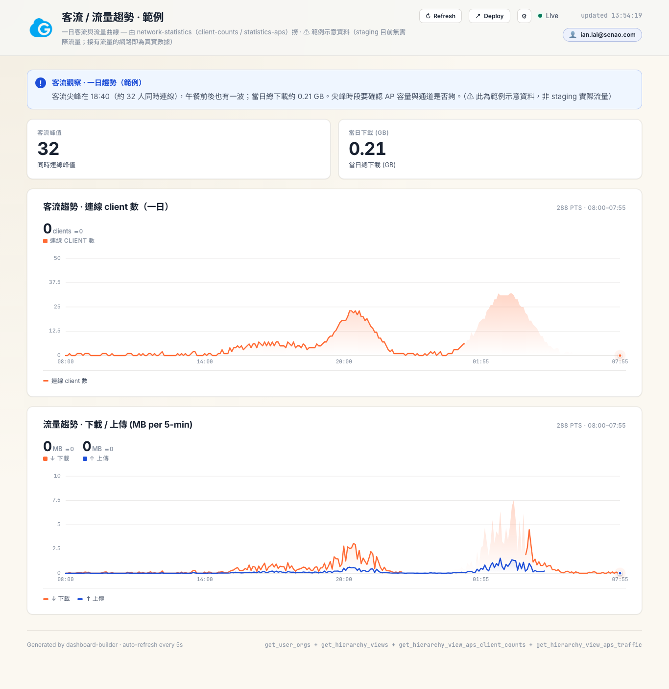
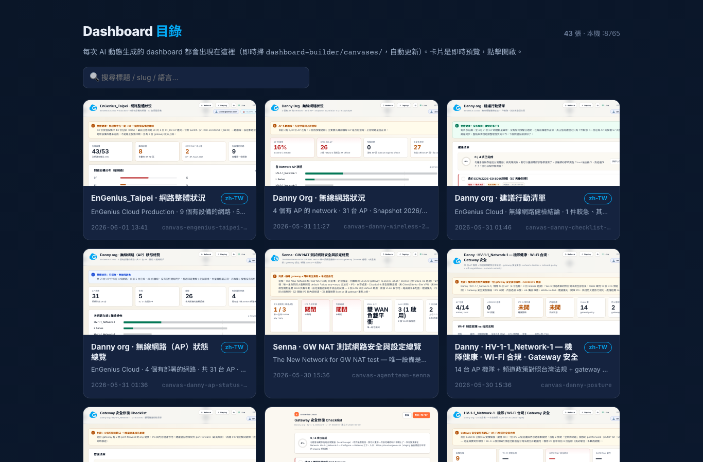
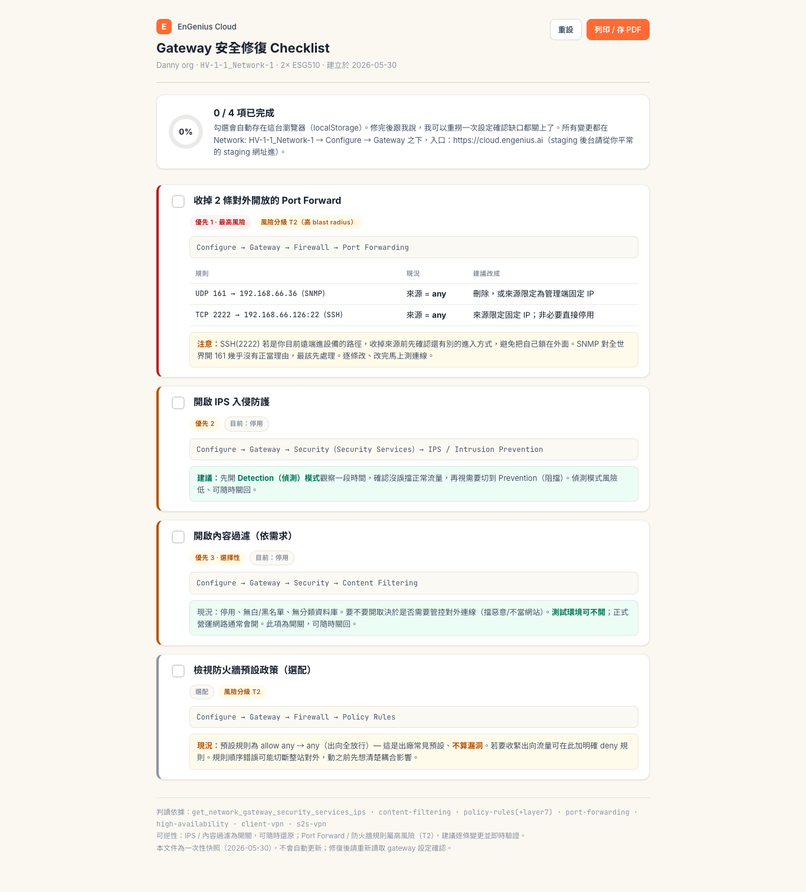

Network AI-Assistant Skill v2
— 從 PoC 到可分享的網管助理
v2 把工具變成「可分享」、但撞到 demo 卡關、文件在騙人、兩包要裝兩次、客群其實同時用兩種 AI — 這一輪把它從工具收斂成有定位、能規模化、品質不會隨成長而崩的產品。
engenius-craft-ai、補上 Claude Code + OpenAI Codex 雙 agent 支援、加了「新功能進來前先驗證真 API」的品質閘、把裝法做成一鍵精靈
為什麼要做這件事
v2 之後工具「能用、能分享」了，但很快撞到四件不是「再加功能」能解決的事：
1. 同事現場 demo 卡住。 使用者問了很廣的問題（沒指定哪個 org），AI 為了周全開始對上百個 org 逐一掃，幾分鐘畫不出 dashboard。這不是效能問題 — 是 AI 沒先收斂範圍，而且當下 persona 規範沒被遵守。
2. API 文件在騙人。 手動跑 22 個高風險 API、抓到 11 個「文件說的」跟「實際回的」對不上。最誇張的用量統計：文件聲稱 summary = 明細加總，實測差 37 到 880 倍。
3. 兩包要裝兩次很煩。 之前是兩個 plugin，團隊試用要裝兩包、各自更新。
4. 客群同時用兩種 AI。 主要使用者不只用 Claude Code、也用 OpenAI Codex。一套只能跑一個 agent，等於放掉一半的人。
所以 v3 的主軸不是加 feature，是把工具收斂成產品：定位清楚、能規模化、不會越長越爛。
技術選型 / 關鍵決策
這一輪的「選型」幾乎都是決策、不是選工具：
| 決策 | 選的理由 |
|---|---|
兩個 plugin 合併成一個 engenius-craft-ai | 團隊裝一包就好；dashboard-builder 變成並列的一個 skill。安裝心智成本砍半。 |
| 雙 agent 不做跨工具安裝器、也不改 MCP | 實測 Codex 用同一種 SKILL.md 格式，而我們的 skill 因把 transport 自包在 _shared/、不依賴 harness，所以直接可移植。結論：一份 source、兩個薄打包入口。 |
自寫 validate-skill-docs.py | 與其相信文件、不如每次拿真 API 回應對照。配 pre-commit gate、文件漂移直接擋 commit。 |
| 判斷留散文、水管固化成積木 | 一度想把整條 pipeline 寫死，但那會殺掉 AI 判斷力。最後分層：要不要畫 / 畫什麼留 persona；解 ID / 並行 / 自包固化成積木。 |
named API profiles + use-key.py | 多把 key（staging / prod / 各自的）一行指令秒切。 |
外部服務與金鑰
| 服務 / 模型 | 用途 | 備註 |
|---|---|---|
| EnGenius Cloud API | 撈資料 / 診斷 / 讀設定 | staging + prod，api-key header |
| Claude（Claude Code） | 主要 agent runtime | 第一種裝法 |
| gpt-5.5（OpenAI Codex） | 第二種 agent runtime | 雙軌、語氣略不同 |
~/.claude/engenius_env.json | named profiles 放多把 key | 兩 agent 共用、不進 repo |
| Vercel | 主站 + 文件部署 | push 即部署 |
API_KEY required 讓人卡住。系統架構
核心觀念：一份來源，兩個外包裝。 skill 本體只寫一次（api-skills/），兩個 agent 的安裝包都從同一份自動產生，品質閘守在入口。
4 份規範文件（persona 怎麼講話 / design 視覺 / house-rules 平台事實 / memory）是讓 AI「像顧問而不是 API 包裝」的關鍵。
推進方式
這一輪跟 AI 協作、幾個有效的模式：
- 用「壓力測試的失敗」當起點：demo 卡住那次，我沒只修表面（並行快一點），而是跟 AI 把它拆到根 — 發現問題在上游（範圍沒收斂）。把失敗當診斷樣本，比直接要解法有用。
- 先讓 AI 探真實、再寫文件：每加一個 API / skill 固定先 probe 看真實回應。AI 很會「憑 spec 想像」，這步強迫它面對現實。
- 把判斷說清楚、讓 AI 固化水管：我負責「該收斂嗎、護城河在哪、license 怎麼設」；AI 負責把重複機制做成積木。
- 不急著動手、先確認意圖：問一個方向（例如「要刪舊文件嗎」），AI 先盤點 + 分級 + 標風險，等核可才動。破壞性操作一律先給清單。
踩到的坑，讓我更懂的事
上百個 org × 模糊問題 = AI 對全部 fan-out，再怎麼並行都是在洪水裡並行。
11 個 doc-drift bug 都是同一模式：文件照 spec / 印象寫，AI 看到的真實 API 是另一回事。
Codex 讀 persona 只讀了前 220 行（檔案 378 行），剛好把「要主動給建議」那段切掉；加上它底層是 gpt-5.5、不是 Claude。
一度焦慮：API 公開、架構攤在 repo、任何人能照做、甚至套到別家平台。
最終樣貌
從 v2 的「能分享的 demo 工具」變成「團隊可正式試用的產品」：
- 單一 plugin
engenius-craft-ai，一行/plugin install裝齊全部能力 - 雙 agent：同一套 skill 跑在 Claude Code 與 OpenAI Codex（都能撈資料、跨 skill 串接、動態生成 dashboard）
- 一鍵安裝精靈
setup.py：檢查套件 → 引導輸入 + 驗證 key → 選 agent 安裝 - 品質閘：新 API / skill 一律 PROBE → AUTHOR → VALIDATE、drift 擋 commit
- 本機 Dashboard 目錄頁：動態生成的 dashboard 自動列出（即時預覽 / 搜尋 / 刪除 / 已部署徽章）
- 多把 key 秒切 + 設不好時會引導你的錯誤訊息


如果繼續往下
- 團隊試用 rollout：加 collaborator + 決定共用 key 還是各自一把，就能正式開測。
- MSP 跨廠商：架構「可移植到任何廠商」這件事，在「MSP 要看穿混合機隊（Meraki + EnGenius + …）的單一 AI 顧問」情境下，會從弱點變成唯一賣點。
- 動手改設定 + 記憶：目前停在「讀 / 診斷 / 提案」；下一步讓 AI 真的改 config（風險分級 + 人核可）並同步記 audit log。
- 產品名定案 + 對外：rotate 舊 key、prod 填好、名稱拍板，才談公開。
1. 這個案例展示了什麼
把「能動的工具」升級成「能規模化、品質不掉的產品」，靠的不是狂加功能、而是三件事：收斂定位（一個 plugin、一個角色）、建立紀律（新東西進來前先驗證真實、而不是信文件 / 記憶）、想清楚護城河（程式碼會被抄、關係與驗證知識不會）。AI 在這裡最有價值的不是寫 code、是當「把失敗拆到根、把判斷固化成機制」的協作者。
2. 可移植性
✅ 直接可複製：
- 「先 probe 真實、再寫文件 + 用 gate 擋漂移」這套紀律 — 任何接外部 API 的專案都適用。
- 「判斷留散文、水管固化成積木」 — 想保留 AI 判斷力又要穩定產出的工具都受用。
⚠️ 情境限定：
- 雙 agent 之所以幾乎零成本，是因為我們的 skill 早把 transport 自包、不依賴 harness。若你的工具深綁某 agent 的內建能力，移植成本會高很多。
3. 起手式 prompt
如果你也要做、可以先問 AI：
我這個專案接了哪些外部 API？幫我對每個 op 跑一次真實呼叫，
把「文件說的」跟「實際回的」列出差異。建立製造紀律時：
假設這個工具會持續長大，幫我設計一道「新功能 / 新 API
進來前必須通過」的驗證關卡，並說明怎麼掛進 pre-commit。第一題找出你的 doc-drift、第二題把「驗證」變成結構上跳不過的關卡。